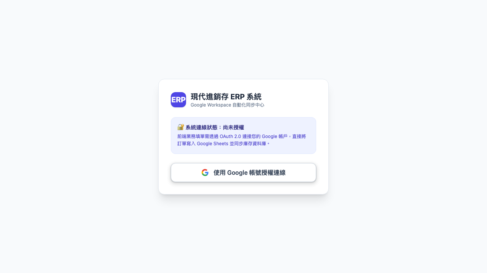
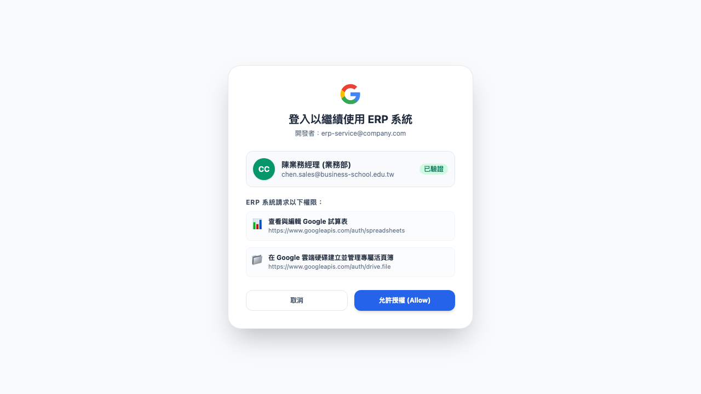
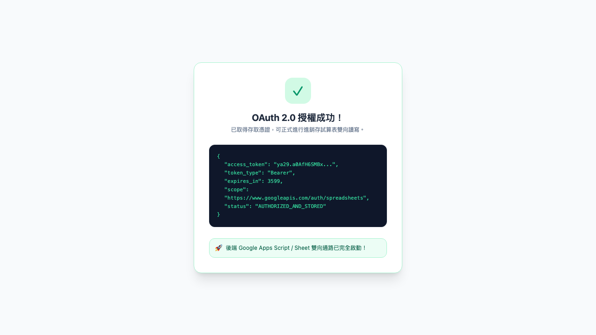

本講義展示 Antigravity Agent 如何透過 Playwright 瀏覽器自動化引擎 + macOS 底層 FFmpeg 影音轉碼，全自動模擬使用者授權互動、自動捕捉高解析度步驟截圖，並壓製成 WebM、MP4 與動態 GIF。
格式：MP4 / WebM / GIF (由 AI 自動駕駛瀏覽器點擊錄製)
業務人員進入進銷存系統後，系統偵測尚未持有有效 Token，呈現提示並引導點擊「使用 Google 帳號授權連線」。

彈出 Google 官方同意視窗，顯示本次連線請求的 Scopes（僅限 Google Sheets 與指定 Drive 活頁簿存取），確保商管資安合規。

Google 授權回調伺服器，系統安全儲存憑證，隨後可透過 Google Apps Script / REST API 進行全自動即時進銷存同步。
